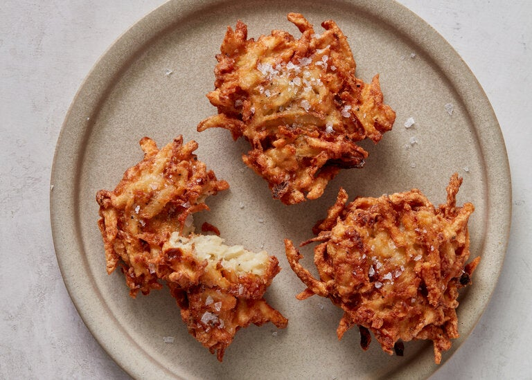

Lazy Latkes

Potato latkes are a pan fried potato pancake, often served around Chanukah. They are typically served with either applesauce or sour cream, and they're delicious. While traditional recipes require peeling and shredding potatoes, you can buy frozen or refrigerated hashbrowns at the store to save you a bunch of time, and they taste just like Nana's!
Ingredients
- 1 bag frozen/pre-made shredded hash browns
- 1 large yellow onion, peeled and chopped
- 1 cup vegetable oil
- 3 eggs
- 1/2 cup flour or matzoh meal
- Salt and pepper, to taste
Steps
- Whisk eggs together.
- Combine shredded potatoes and chopped onion in a large mixing bowl.
- Gradually, add flour/matzoh meal, eggs, salt, and peper while mixing. I've found the best way to do this is by hand, but watch out if you're using frozen hashbrowns as your hands can get quite cold!
- Once combined, heat up about half the oil in a flat-bottomed pan over medium heat.
- Form the latkes into your preferred size. Some folks love thicker latkes, others like thin. This is personal preference on the crispiness:doughiness ratio that you like. I prefer latkes on the thinner/crispier/smaller side, between half to two-thirds the size of my palm.
- Place your formed latkes in the pan so it's full but the latkes aren't touching. Cook 4-5 min per side, watching for them to turn golden brown.
- Place on a paper-towel lined plate and add a new batch to the pan. Rinse and repeat.
- Serve right away with applesauce (if you have taste) or sour cream (if you're a goy).